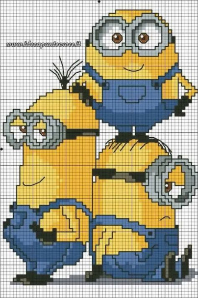
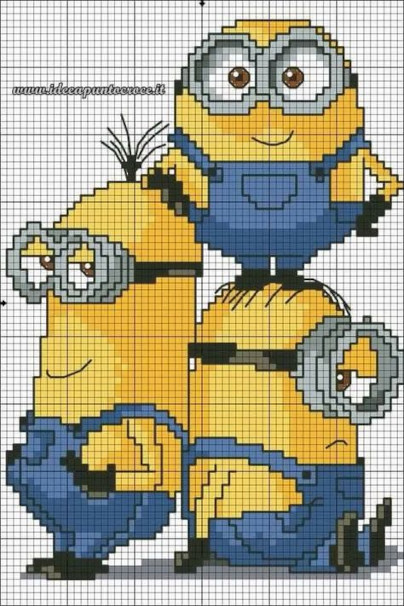
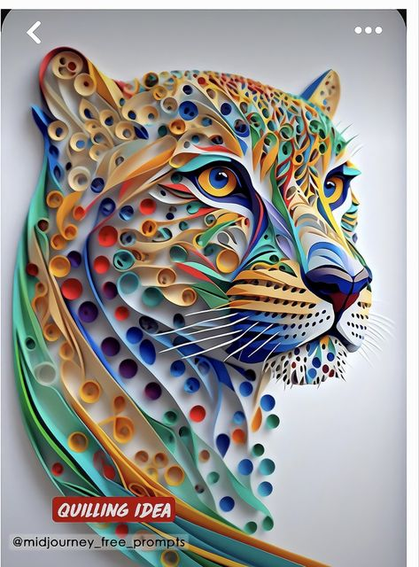
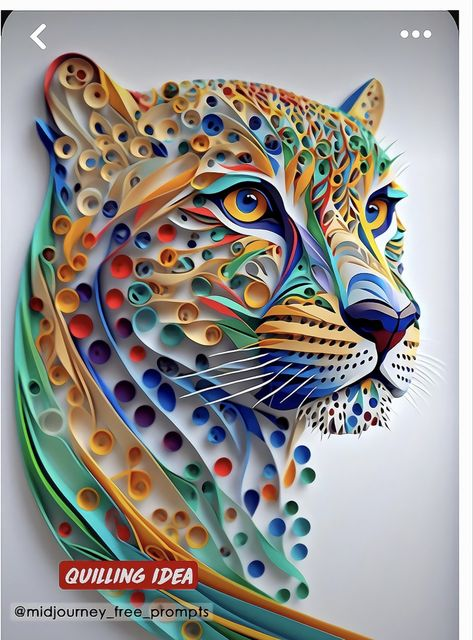

Origem do artesanato: o artesanato surgiu na Pré-História. Os homens desta época faziam cestos, ferramentas, vasos
de cerâmica, roupas, esculturas e outros objetos usando as mãos como ferramenta e os recursos da natureza como
matéria-prima.
Crochê,Clássico dos clássicos entre as técnicas do feito à mão, o crochê e isso vale também para o tricô - é atemporal e sempre terá lugar nos mais diferentes estilos de decoração.
No dia 19 de março é comemorado o Dia do Artesão. Em 28 de maio comemora-se o Dia do Ceramista.
 


 
